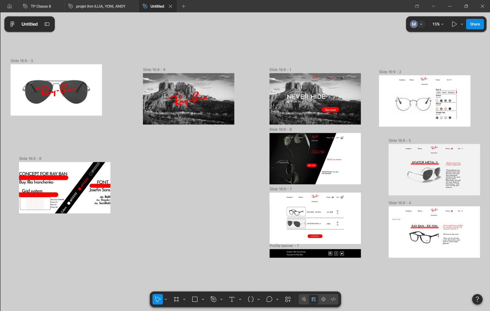

Concept Ray-Ban : maquettes Figma
Concept de site e-commerce pour Ray-Ban, conçu sur Figma : page d’accueil, configurateur de lunettes, fiches produits, promotions et panier. Je me suis appuyé sur une grille de 12 colonnes, la typographie Josefin Sans et une palette limitée.